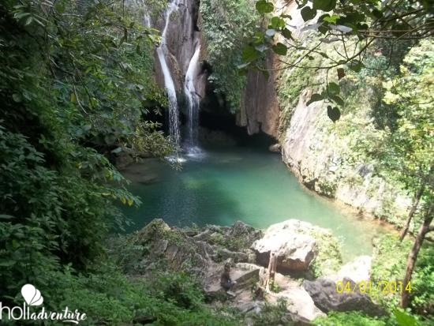
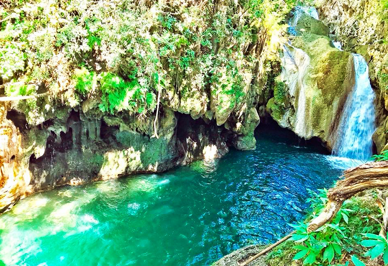

Salto de Javira


The Jumping Waterfall
Salto de javira is a little river with multiple natural pools, it is located along a hiking trail. The trail ends in a waterfall that pours into a huge natural pool after about 4 km. There is a little stalactite cave where you can swim behind the waterfall. and It is possible to jump from the waterfall into the natural pool from a height of around 5 meters. The pools reaches around 9 meters of depth.
The Salto de Javira is home to many stunning vistas. You may hope to witness a large variety of exotic plants, insects, and animals when you visit Salto de Javira. You could come across many interesting creatures and insects along the wonderful trails. Among the creatures you may observe are loros, butterflies, unusual species of birds, and don't be scared, but you may also come across stunning jaguars.